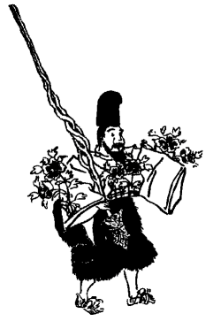

| 放免考 | |
| 喜田 貞吉 | |
| (2013) | |
放免考
喜田貞吉
本願寺葬儀参列の宝来の事に関連して、前号までに一と通り祇園の犬神人
の観察を終った自分は、これに次いでさらに賀茂の葵祭に関連して、「放免」なるものの由来変遷を観察すべき順序となった。
賀茂の葵祭は前例によって去る五月の十五日を以て厳粛に行われた。その祭儀の行列は例によっていかにも古典的のものであった。その参列者の名称から、その服装に至るまでも、大体として平安鎌倉時代当時の面影を、そのままに髣髴せしむるに足る程のものである。風俗研究会江馬務君の葵祭解説記するところによると、現時の行列には先頭に騎馬の警部が三人、次に素襖の侍
が二人、次に看督長代
が四人、次に騎馬の検非違使志代
、これには調度掛、童、放免
が各一人、火長代が二人、如木
が四人、白丁が三人従っている。次に騎馬の検非違使尉代
が一人、これには舎人がつき、別に前者と同様の従者がしたがっている。次に山城使代から以下一切の行列の事は、本編の研究に必要がないからここにこれが記述を省略して、以下単に検非違使随従の放免の事のみを記述してみたいのである。
言うまでもなく往時の検非違使庁は今の警視庁のようなもので、訟獄の事にもあずかるが、主として非違の警戒罪人の追捕を任としたものである。したがって賀茂祭の如き大祭には、その官人が勅使の行列の先頭に立って、非違警戒の任に当ったものであった。しかるにその先にさらに素襖の侍体
のもののついているのは、おそらく室町時代において、検非違使の参列がもはや単に形式にのみ流れて、警固の実務に当るに足らなくなったが為に、別に当時の武士をして、二重にこれを護衛せしむるに至ったとの名残と察せられる。しかるにそれもまた後にはついに形式に流れて、警固の実を失ってしまったので、今ではさらにその前において、明治大正式の警部の、三重の護衛を要する事になったのである。いずれはこの警部もまた形式に流れて、さらに別の警固がそれにつく時代がないとも言えぬ。そしていわゆる放免は、その中では早くから形式に流れてしまったものなのである。今江馬君の説明を借りて、まず以て葵祭における放免の性質及び服装を紹介しておく。
鉾持（放免） 放免とは検非違使庁 の下部 にて、元来罪人の放免せられしものを用ひて、盗賊の追捕囚禁などに従事せしめしものなり。此の日放免は立烏帽子を冠り、摺染の狩衣に紅の単衣を重ねて鉾（木の枝）を持ちて行く。特に注意すべきは、胸に造花風流を付して行く。これ徒然草に所謂放免のつけものなり。摺染とは昔は木版の上に裂 を貼り、山藍の葉をもつて摺りて文様せるものにて、放免には横縞の青き文様などを付したるなり。藁沓を履けるは前に同じ。（以上江馬氏の文）
葵祭に出る放免は検非違使庁の下部
として、勅使の警固に立つ検非違使の官人に随行しているものである。当初は無論実用の鉾を持って、もし行列を犯すものでもあればこれを制止し、反抗でもすれば実際にこれを突き殺すくらいの覚悟を持っていたものであったに相違ない。その身分は最下級の警吏であったから、もちろんその服装の如きも簡易卑賤のものであったに相違ない。しかるにそれが既に平安朝も末期に近い大江匡房の頃になっては、彼らは葵祭に列する際には綾羅錦繡を身に纏いて、為に識者の不審を招く程にもなっていた。それがさらに鎌倉時代も末葉の、兼好法師の頃に至っては、その衣服にいろいろの飾り物をつけて、為に左右の袖が重くて自分一人の自由にならず、「人に持たせて自らは鉾だにも持たず、息つぎ苦しむ有様いと見苦し」と「徒然草」に嘲けらるるまでに甚だしくなった。今日ではそれ程ひどくはないけれども、それでもなおいろいろの造り花をつけて、金属の鉾の代りに木の枝を持ち、それがもと下級警吏たる検非違使庁の下部であった事などは、全く忘れられてしまった形になっているのである。
検非違使の下部を「放免」と称する事については、徳川時代の学者をして、かなりその説明に頭を悩ましめたものであった。「安斎随筆」には、大江匡房の「江談抄」に、彼らが賀茂祭の際綾羅錦繡の服を著用するも、非人なるが故に禁忌を憚らざるなりとある説を引いて、
貞丈曰く、非人とは甚だ賤しみたる詞なり。至極の下司にて、人に非ざる者なれば美服を憚らず、「放免」はホシイマヽニユルスとよむ。是れ祭の日ばかりの事なり。是を推して常の号となりしなるべし。
と解している。すなわち賀茂祭の日にのみ限って勝手な真似をしてもよいとの事で、それで放免と云ったのが一般の名称になったというのである。伊勢貞丈の如き卓見家ですら、なおかつこんな不徹底な説明に満足していたのだ。また谷川士清の「倭訓栞」には、
東鑑右大臣家鶴岡拝賀時、供奉行列の中に放免四人と見えたり。検非違使庁の下部をいふといへり。行列は各自に其の分上を專に務むるをもて、列の人数に離れ、順の乱れぬ様にし、或は闘諍を鎮め、或は下部の頓に煩らひある時に、人数に加はりて務むるをもて、行列を放ち免さるゝの義なり 。常にいふ走り下部なりとぞ。
と云っている。前者とその説は違うが不徹底な程度においては同一だ。そして彼らの名称が、もと放免囚である事に気がつかなかったのだ。
放免が囚人の放免されたものの名であることは、既に「古事類苑」の案に、
放免は庁の下部なり。犯人の放免せられたるものを役して、追捕囚禁の事に従はしめ、或は流人を護送せしむ。此輩は賀茂祭に、美服を着けて之に従ふとあり。贓物を染めて用ひるものなりといふ。
とあるもの、まず以て一と通りは動くまじき解である。前記江馬君の説明またこれによったものである。「今昔物語」廿九「検非違使盗レ
糸被二
見顕一
語」に、放免等を引率して盗人追捕に向った検非違使官人の一人が、其の配下の調度懸（今の賀茂祭にも調度掛というもの随行す。放免よりも上位のものなり。）と牒じ合せ、自身に糸を盗んで袴の下に隠して、たまたま仲間の検非違使等に見あらわされたのを見た随従の放免等が、仲間同志で私に語らいて、
我等が盗をして 、身を徒になして 、かゝる者と成りたるは 、更に恥にも非ざりけり。かゝる事もありけり。
と云って、忍び笑いに笑ったとある。また同書同巻の「詣二
鳥部寺一
女値二
盗人一
語」にも、女の童を連れて鳥部寺の賓頭盧
に詣でた或る人妻が、或る雑色男の為に強奸せられ、その上に主従の衣服をまで剝がれたことを述べて、
其の男の本は侍 にて有けるが、盗みして獄に居て 、後放免に成にける 者なりけり。
とある。放免が今のいわゆる免囚であることは疑いを容れぬ。少くも放免の語が、放免囚から来たことは疑いを容れないのである。
いわゆる放免が検非違使庁の下部であることは、「伊呂波字類抄」に、「放免」（ハウメン廷尉下部也）とあることによっても明白である。そしてその名称がもと放免囚から起った事もまた疑いを容れないところではあるが、しからば何が故にその放免囚が下級警吏として使役せられるに至ったか、その一代はよしや放免囚であったとしても、その子孫は果していかに成り行いたか、また一切の放免囚はことごとく下級警吏として、永く使役せらるるに至ったものか、「今昔物語」等古書に見える放免なるものが、ことごとく検非違使庁の下部なるもののみか。これらの数多の疑問に対しては、寡聞未だ今日まで一つも研究されたもののあることを知らないのである。
放免囚とは罪を犯して一旦投獄せられた囚人が、所定の刑期を終って出獄放免せられたものの名称である。しからばその放免囚が、特別に公権停止もしくは公権剝奪の付加刑を課せられ、或いは郷国追放の処分を受けなかった限りは、少くも彼らが以前に某地貫籍の公民であったものならば、その放免と同時に、国法上からはもとの公民に立ち帰るべき筈である。したがって放免などという忌まわしい名称が、永くその身に付き纏わるべき筈はないのである。「西宮記」巻廿三臨時十一与奪事の条に、役おわりたる獄囚を放免
するの儀を叙して、
勘問式云、尉乍二 乗馬一 （或佐行レ 之）向二 獄門前一 、喚二 直看督長名一 、（誡可レ 令レ 帯二 兵仗一 歟。下傚レ 此。）仰云、某姓某丸召世 （有二 数人一 者、可レ 仰二 某丸某丸等一 。）称唯召出令レ 候。仰云、某丸承礼 、（有二 数人一 者、可レ 仰二 某丸等一 。）依二 徒役畢一 、任レ 法免給布 、各罷 二 還本貫 一 弖 重不 レ 奉 二 仕犯 一 須 、為 二 公御財 一 之天 備 ‐二 進御調 一 礼止 宣 布 （長引、他傚レ 此）次召二 看督長一 仰云、取レ 駄礼 （此云、加奈支止礼）称唯令レ 脱、（脱去之後、因可レ 押歟）
今案、件免物、近代向二
獄門一
儀不見。只着鈦改次行レ
之。囚人着レ
鈦了後勘問。尉揖。佐喚二
看督長一
一音
称唯、立仰云云。取レ
鈦之後、自二
懐中一
取‐二
出烏帽一
給レ
之。一拝分散而已。
とある。これによると、放免囚は役おわるとともにその郷国に帰って、もとの大御財
すなわち公民に立ち戻り、再び罪を犯すことなく、国民としての課役を奉ずべきことを申し渡され、烏帽子を賜わって放免せられるものであることが知られる。しかるに事実その放免囚が庁の下部として使役せられているという事は、実はその中の極めて一少部分であって、あとよりあとよりと獄舎から放免せられるものの数が、さらにそれよりも甚だ多いものであったことは、単にこれを常識より考えても、極めて明白なる次第であろう。しからばその放免囚の多数の末はどうなった事であろう。無論原則としては公民に立ち帰るべきではあるが、中には帰るに処なきものも少くはなかろう。帰ったとても一旦罪囚であったものとして、郷党家族に容れられないものも多かった事であろう。さらに中には自ら旧好に顔を合す事を恥じて、故郷に帰るを欲しなかったものもあろう。かくてこれらの人々は、或いは後世にいわゆる「来り人」として、異境に寓して別に生活の道を求め、或いはいわゆる雑式浮宕
の輩となりて、放浪に衣食し、随処に口を糊するものも出来たに相違ない。そしてこれらの中から採用せられた少数のものが、いわゆる庁の下部として依然放免の名を以て呼ばれ、盗賊の追捕、獄舎の警固、検非違使の随員、罪囚の護送等に役せられたものであったのだ。
放免が盗賊追捕に向った事は、前記「今昔物語」の、糸を盗んだ検非違使の話によっても明らかである。また同書に「放免共為二
強盗一
入二
人家一
被レ
捕語」という話の中の放免は、東の獄の辺に住んだものどもだとあってみれば、無論検非違使庁の下部としての放免が、獄舎の辺に住んで、その獄舎の警固に任じていたものの事と思われる。同書の「西市ノ
蔵ニ
入ル
二
盗人ニ
一
語」の放免も、検非違使に随って蔵に閉じ籠められた盗人の追捕に向ったものである。また同書の「藤大夫 家ニ
入二
強盗一
被レ
捕語」は、藤大夫の宅に押し入りたる強盗を追捕せんが為に、藤大夫と懇意な検非違使の藤判官が、放免を呼んで実地を検証せしめ、その放免の検証に基づいて、盗人の党類を捕えたという話である。さらに同書「幼児盗レ
瓜蒙二
父不孝一
語」は、放免の名は見えておらぬが、庁の下部が犯人を捕えてその親の許に連行し、これを恐喝した話であって、その庁の下部なるものが、いわゆる放免である事は申すまでもない。その流罪囚護送の事は、「源平盛衰記」文覚上人流罪の条に、
伊豆の国へ流罪の由にて......院より庁の下部 二人付られたり。庁の下部放免 二人も、下向すべきにてありけるが、文覚に語りけるは、庁の下部の習 、懸 る事に就いてこそ、自ら酒をも一度飲む事にて候らへ、去ればこそ又折々の芳心をも申す事なれ。上人御房程ならぬ人だにも、人には訪れを乞ふ事にて候。申さんや御房は貴き人にておはします上、京白川に知人多くぞおはすらん。解 廻らして国の土産、道の粮物にも所望し給へかし、たゞ官食ばかりにては慰もあるまじ。且は身の計をも存じ、又人の心をも兼ね給へかしと、様々教訓しけり。
とあって、その放免が文覚に賄賂を請求したことまでが書いてある。「平家物語」には同じ事を、
庁の下部の習 、加様の事に付てこそ、自らの依怙も候へ。
とあるが、いずれにしてもこれらの放免が、庁の下部として罪囚を警護しながら、その罪囚から役徳を得ていた事情が察せられる。また「今昔」十六、「仕二
長谷観音一
貧男得二
金死人一
語」には、明らかに「庁の下部といふ放免
」とあって、その放免が長谷観音信仰の貧男を九条の辺で捕えて、これを人夫
に使役した話を書いてある。
日暮方になりて、既に九条の程を行くに、只ひとり心細くて行きけるに、庁の下部といふ放免共 にあひぬ。此男を放免共俄に捕ふれば、男こは何故に捕ふるぞと云へば、早う夫 に取るなりけり。引張つて上様 へ将行 きて、八省に将入 りぬ。男奇異 しく、怖しく思ふ程に、内野にありける十歳許なる死人を、此れ川原に持行て棄 てよと責めければ、男終日長谷より歩み極 じて、力なく堪へ難くて、我れ長谷に三年月参りして、結願して帰る時しもかゝる目を見るこそ、実 に前世の果報の致す所なめれ。妻の常に言ひつる様に、機縁のおはさざりけるなめりと、哀れに思うて、此の死人を持つに極めて重くして持ち上らず。然れども放免共 、強ちに責めければ、念じて持ちて行くに、放免共 後に付て見れば、棄てゝ逃る事もなくて行くに、極めて重き川原まで否行着 かずして、男心に思ふ様、我れ独して此の死人を川原に持ち行き難し、然れば我れ家に持て行きて、夜る妻と二人持て棄てんと思うて、男放免 共に、かくなん思ふと言ひければ、放免 然らばさも為 よと云ひければ、男家に死人を持て行きたれば、妻此れを見て其れは何ぞと云へば、男しか〴〵の事にて此く思うて持ち来るなりと云ひて泣く事限りなし。
とある。これはその死人が実は観世音からその貧男に賜わった黄金であったので、極めてめでたい話ではあるが、そんな話が語られるのも、ともかく庁の下部たる放免が、随分横暴な事をやったものであったが為に相違ない。この話の終わりに、
彼の死人を持て男家に入れにければ、門にありつる放免 も見えざりけり。これを思ふに、実の放免 の夫 に取りけるや、亦観音の変じ給ひけるにや。
とある。しかし実の放免もこのくらいの事は仕かねまじきものであったのだ。
放免狼藉の事はしばしば物に見えている。「中右記」寛治八年十二月四日の条に、
召二 検非違使丈部保成一 、付二 申文一 献二 別当一 。是備前役夫工催神民為二 庁下部二 被二 殺害一 事依二 上卿命一 也。
また八日の条に、
一日宇佐使立日、検非違使下部等、備前役夫工催使神民殺害事、重付二 説長一 令レ 申。
とある。これは果してどんな事件であったのかよくはわからぬが、「小右記」長和三年四月二十一日条に、
今朝四条大納言密々示送云、使庁事極多二 奇事一 。是兼案也。面可 二 談説一 者。誠雖二 聟君一 不レ 従二 諷諫一 歟。使庁狼藉不 レ 如 二 今時 一 。看督長放免 等、横‐二 行京中一 、切二 市女笠 一 、又別当舎人等同切云云。市女笠非二 禁制物一 。仮令雖二 禁物一 、看督長放免 別当下人破却、太奇怪事也。別当年歯極若、又無二 才智一 。暗夜々々、又暗夜也。京畿之間昏乱無レ 度。使鼻 如レ 口。聖人鑒戒而已。
とあるのは、彼らが市中往来の婦人の市女笠
を切ったことを咎めたので、けだし彼らの間には、かなり傍若無人の挙動が多かったものらしい。これは検非違使所属の看督長や放免等が、犯人あらための作法を濫用して、顔を隠した婦人に対して悪戯をしたものか、それとも別の意味からの暴行であったかは明らかでない。そしてこの事はその後にも止まなかったものと見えて、同書治安三年五月十三日条にも、
此両三日或検非違使、或刀禰、切二 市女笠幷襪等二 云云。未レ 得二 其意一 。若有二 新則一 者、先立二 日限一 、令レ 知二 遐邇一 、可二 被布一 歟。而俄切破事何如。就レ 中女等、以二 市女笠一 隠レ 形、参二 功徳門一 。是善根也。至レ 今無レ 頼、女等難レ 植二 善根一 歟。女人着レ 笠可レ 無二 公損一 歟。法制之事以レ 萬可レ 数。而忽有二 笠制一 。未レ 知二 其是一 、往古無レ 制、足レ 為レ 奇乎。
とも見えている。また「長秋記」大治四年十一月十八日条には、
未刻於二 院門前一 被レ 問二 信実一 。放免付二 左右手於一 、徒跣問レ 之、云云。大略及二 恥辱一 歟。
とある。これも事情は明らかでないが、今日ならば確かに人権蹂躙問題となるべきものであろう。また同書十二月六日条に、
別当談云、去追捕之間、当講恵暁房所二 安置一 之東大寺聖宝僧正五師子如意、為二 放免 一 被二 盗取一 給。絵師頼如者尋取出、被レ 返二 本寺一 。師子文雖二 取破一 。如レ 元打付云云。
とあって、彼らの中には盗賊追捕に向いながら、自身却って盗みを働く事もあったのだ。
このほか庁の下部としての放免に関する記事は、諸書に少からず見えているが、煩わしければ一々は引用せぬ。
放免囚が検非違使庁の下部として採用せられるに至った動機如何は、未だこれを明らかに記したものを見出せぬ。しかしその実際から言えば、なお江戸時代に与力同心等の手先として、前科者たる目明かしを使役したのと同一のものであったと解せられる。目明かし一つに岡引と云い、江戸では訛ってオカッピキと云っていた。いわゆる蛇
の道は蛇
のたとえの如く、犯人の事情に精通しているものはやはり彼らの仲間であることから、比較的罪の軽い犯人の中の気の利いたものを選抜して、主として探偵捜索の用に供したものだという。目明かしの名はその実「目証
」で、犯人の顔を熟知している仲間の者として、犯人の首実検をなさしめ、目を以て証明
をなさしめる事から起った名かと思われる。「関八州古戦録」に、敵方の忍びの者を捕えて、後に重ねて敵から紛れ来るものの目明かし
にすべしとて、禁錮しておいたとの記事がある。これを岡引というのも、もと犯人の居所に手引きせしめる義であろう。「言海」には、岡引は陸引
で、傍らにあって手引きするものだと解している。目明かし・岡引、必ずしも前科者とのみは限らぬが、ともかく筋のよくないものであった。「徳川禁令考」二十八に、
平人にても科人 にても、悪者 一人差止め、岡引と名付け、手引致させ、其者の罪を免じ、外 科人 を召捕候。
とある。また「反古の裏書」二に、
軽罪の囚一等を許して、他賊の巣窟を探らしむる者、岡引といふ。
ともある。この種の事は実は明治時代までも、内密には行われていた事で、今もなおたまにはあるかもしれぬという。少くも改悛したる前科者を利用して、犯人の捜索に利用する事は便利であるに相違ない。そして庁の下部なる放免は、これが大ビラに採用され、使役され、それを笠に著てしばしば横暴を働いたものであったのだ。
なお放免使役の事は、これを一方から観察すると、一種の免囚保護の事にもなったのであろう。獄を出でても縁
る辺なき身となってしまっては、折角一旦改悛せんとしても進んで正業に就くの方便なく、再び罪科を犯さねばならぬ事にもなるのは、実際やむをえない場合が多かったに相違ない。そしてそれを収容して下級の警吏獄吏に使役する事は、いわゆる機宜に適した所為であったに相違ない。しかし彼らは依然前科者として、他から目せられる事を免れ難かったのだ。そして遂に非人として待遇せられるに至ったのだ。この事はさらに後にいう。
放免囚の或る者が依然放免の名を以て、使庁の下部に採用された事は前述の通りであるが、その選に漏れたものは果していかに落ち行
いたであろうか。無論その原則としては「西宮記」にある通り、各自本貫に帰ってもとの公民に立ち戻った筈ではあるが、犯人にはもともと戸籍帳外の浮浪民が多かった事でもあろうし、郷里に帰って正業につくというのはむしろ少数であったに相違ない。したがってその多数は、或いは流れて川原者・坂の者・散所の者などの仲間に落ち込み、或いは全くの浮浪民となって放浪し、或いは生きんが為に再び罪を犯して身を失うという類のものになったに相違ない。そしてその中にも都合よく行ったものは、しかるべき人の下人に住み込み、いわゆる雑色男
となるものもあったであろう。雑色
の事及び「今昔物語」を始めとして、平安朝以来の書に所見多く、いわゆる雑式でその種類も一つではなく、また時代によってその指すところも変ってはいるが、既に延暦二年の勅にも、雑色の輩浮宕の類
の語があって、その由来すこぶる久しく、また散所・雑色などとも並べ呼ばれて、もとは所属もなく浮浪流寓しつつ、雑職に従事したものに呼ばれた名称であったらしい。しかるにそれが他人の家僕となり、或いは官司に使役せられてもやはり雑色と名に呼ばれて、低い地位に置かれたものであった。そして放免の或る者が雑色と呼ばれる身分のものになっていた事は、前引「今昔物語」の「詣二
鳥部寺一
女値二
盗人一
語」に、鳥部寺で参詣の婦人を強奸し、その衣服を剝ぎ取った雑色男
が、「もとに侍にて有りけるが、盗して獄に居る後、放免
になりにける者なり」とあるによって知られる。これらは同じく放免と呼ばれていても、検非違使庁の下部の放免ではなく、いわゆる雑色男となっていた放免囚である。そしてやはり放免と呼ばれていたのだ。すなわち放免とは前科者ということで、必ずしも庁の下部に限った名称ではなかったのだ。（いずれ雑色の事は他日改めて研究を発表しよう。）
次には庁の下部たる放免の末路、その声聞師や番太との関係、祭の日の放免の華美・風流等の事等叙述しよう。
検非違使庁の下部たる放免が、もと犯罪者の刑期満ちて放免せられたものであったとして、さてその末はどうなったであろうか。特にその子孫らはいかなる道に落ちて行ったであろうか。
父がよしや放免囚であったとしても、その子孫たるものが必ずしも永くその祖先の前科の責任を継承すべき道理はない。否ただにその子孫のみならず、事実前科者であるところのその放免囚自身すらも、無事にその刑期を終ったものはもとの公民に立戻るべき筈であった事は、前引「西宮記」の文の明示するところである。しかしながら事実は必ずしもその理窟通りに行くものではない。その刑期満了後も彼らがなお放免の名を以て呼ばれ、特にその官庁に使役せられたものまでが、非人を以て遇せられていた事から考えてみても、けだし思い半ばに過ぐるものがあろう。
放免が非人として待遇せられた事については、「江談抄」にその明文がある。
賀茂祭放免著二 綾羅一 事、被レ 命云、放免賀茂祭著二 綾羅一 事、被レ 知哉如何。答云、由緒雖レ 尋未レ 弁。被レ 命云、賀茂祭日於二 桟敷一 隆家卿問二 斉信卿一 云、放免著‐二 用綾羅錦繡一 、為二 検非違使共人 一 何故乎。戸部（斉信）答云、非人之故 不レ 憚二 禁忌一 也。公任卿云、然者雖レ 致二 放火殺害一 、不レ 可レ 加二 禁遏一 歟。他罪科者皆加二 刑罸一 、於下 著二 美服一 条上 、有二 指証 文一 歟。斉信卿答曰、贓物所出来物染、摺二 成文衣袴等一 、件日掲焉之故、所レ 令二 著用一 歟。四条大納言（公任）頗被二 甘心一 云云。
彼らは非人なるが故に、衣服の禁制も通用しないとまで解せられたのだ。
非人のいかなるものかについては、いずれ改めて本誌上に詳説する予定であるが、要するに非人とは公民に非ずの義にほかならない。したがってかの河原の者・坂の者・散所の者など、空閑の地に小屋住まいをしている帳外浮浪の民の如きは、原則としてみな非人であるのだ。刑期満ちて本貫に帰らず、引続き京畿に流寓していたものが、非人として扱われたのはやむをえなかった。
本貫に帰らなかった放免囚の中で比較的運のよかったものは、或いは検非違使の下部として使用せられ、或いは良家の雑色男として採用せられたものもあろう。或いはいわゆる兵家の保護を受けて、その家の子郎等の徒となったものもあろう。しかしながらその多数は、いわゆる河原の者・坂の者・散所の者の徒となって、非人という有がたからぬ名目をその子孫に伝えたものであったに相違ない。そしてその子孫たるものは、その非人仲間から足を洗うの機会を捕えうるまでは、永くその非人を世襲せしめられたのであった。
庁の下部たる放免がまた非人として見られるのも、当世の事情上実際やむをえなかったのであろう。そして彼らは特別の事情なき限りは、その有がたからぬ身分と職業とを子孫に伝えたに相違ない。しかしながら、庁の下部には必ず定員があった筈だ。したがってその子孫のすべてがこれに役せられる事は出来ない。いわんや新たに刑期満ちて放免せられるもののすべてを収容しえなかった事は云うまでもない。思うに庁の放免はもと放免囚を採用したものであったとは云え、いつしかそれが一つの定められたる株になってしまって、実際上新たに放免囚から採用せられるという場合は少かったものであろう。さればかの葵祭に華美なる服装をして参列した時代の放免なるものは、事実はそれ自身前科者というではなく、おそらく世間からもその前科者の子孫だと言う事が忘れられて、なお徳川時代の番非人、すなわち俗にいわゆる番太の如く、単に世襲の下級警吏として、その職権を笠に著て威張って通ったものであったかもしれないのである。
そこでその放免の子孫にして、父祖の株を継承したものは、もちろん庁の下部として一生を送ったであろうが、その以外のものはどうなったかと考えてみるに、やはり父祖の慣れた職業によって、他の村落都邑の警察事務にたずさわり、その村落都邑から扶持を受けて生活していたものであろうと思われる。由来警察・監獄の下級吏員は、徳川時代までも不浄役人などと言われて、いわゆるエタ・非人の徒の従事するものであった。そしてこれは実に平安朝以来、河原の者・坂の者・散所の者などが、その職務に従事していた事の引続きであった。桂里辺の散所雑色をして、野荒しを警めしめられたいとの事は、藤原明衡の「雲州消息」に見えている。坂の者の中の或る者が祇園の犬神人
に役せられ、散所の者の或る者が東寺の散所法師であった事は既に観察したところである。これらは貴紳社寺に役せられたものであるが、村落都邑に付属しても、やはり同類のものの必要であった事は疑いを容れぬ。そして父祖を検非違使の下部として有する放免の子孫らが、流れてここに集まることは最も自然なる道行きであらねばならぬ。そしてその河原の者・坂の者・散所の者などは、往々後世の唱門師・宿・エタ等の元祖となったもので、その源流の一つとしてこの放免が数えらるることは、到底疑いを容るべからざるものであろう。「倭訓栞」放免の条に「寿命院抄」というを引いて、「今深草祭を以ていふならば、桜町の放免うり
の類かと云へり」とある。桜町は「山科言継卿日記」に、北畠とともに声聞師の居所として知られた所で、ここに後までも放免と名に呼ばれたものがいたのであった。その地は京都室町姉小路の辺で、御所に近かったからその声聞師を御近所の声聞師と呼び、毎年正月十八日の三毬打
に際し、禁裏に参上したものであった。また「蔭涼軒日録」長禄二年十一月二十二日条に、相国寺領北畠・柳原の散所の事が見えている。この北畠の散所は「言継卿記」の北畠の声聞師と同じものと考えられる事によってこれを見れば、放免も、散所も、結局は同じところに落ちついたものと察せられるのである。
賀茂祭に出る放免が綾羅錦繡を身に著けていた事は、既に大江匡房の「江談抄」の話題に上っているところであるが、その後に至ってその服装はますます華美を競うようになり、前引「徒然草」に見ゆる如く、はては自分で自分の身を持ち扱いかねて、左右の袖を人に持たせるという程にもなった。しかもこれは由来既に久しいことで、しばしばこれを停止してみても、いつしかまた弛んでしまったものとみえる。古いところでは「中右記」永久二年（鳥羽天皇朝）四月六日条に、
今朝行重・資清・経則来申云云。又申云。去年賀茂祭検非違使所二 相具一 之庁下部等、或付 二 鏡鈴等 一 、或著 二 錦紅打衣 一 。如レ 此過差欲二 停止一 。去年別当新任之間、不レ 知二 案内一 既過了也。仰云、尤可二 制止一 。但可レ 制事、不レ 可レ 制事、慥分可二 下知一 者。......晩頭明兼来、祭間庁下部装束可レ 制事、錦紅打衣、金銀類、如二 鈴鏡風流事一 、可二 制止一 由仰下了。此外事、強不レ 可レ 制歟。
とある。かくてその八日に至り、いよいよその旨を奏上した。
奏、祭間庁下部装束過差事、可二 制止一 色々、金銀錦紅打衣、如二 鏡鈴風流一 之類也。仰云、尤可レ 制。早可レ 廻‐二 告検非違使一 也。
次いでその十六日条に、
賀茂祭。庁下部装束、過差皆従二 停止一 。兼日仰下之故也。
とあって、この年はその制止が実行されたのであったが、その後いつとなくまた互いに華美を競うようになったとみえて、「吉記」安元二年（高倉天皇朝）四月二十二日条に、賀茂祭の行列の状を記して、
右府生紀 兼康（駕鹿毛馬） 下部（虫襖上下、赤地錦衣付金銅鶴喰松）
左府生大江経弘（駕仁毛馬） 下部（蒲染打、付金銅洲浜葵等）
右志 中原重成（駕仁毛馬） 下部（白唐綾上下、紺衣付鶴）
左志 安倍資成（駕黒馬） 下部（虫襖上下、付小弓袋張皮度立等）
清原季光（駕仁毛馬） 下部（褐反上下、付金銅椋上具等）
中原清重（駕黒馬） 下部（花田打上下、付錦織機具等）
中原広基（駕仁毛馬） 下部（青地錦上下、鰭袖替赤地錦股立、同錦纐纈衣、有菊閉）
右尉 平兼隆 （不差剣尻鞘駕黒馬）御廏舎人（著赤色上下、山吹衣） 私舎人（著浅沓、相副、居飼如常） 童（濃香花田衣） 雑色（槿白衣）
下部（花田打紅衣、付金銅枇杷） 調度懸火長（如レ
件）
左尉 平成清 （鹿毛馬） 舎人（香） 童（槿） 雑色（白襖） 下部（褐反上下、付金銅鷹並犬錦鷹犬飼等）
左尉 惟宗信房（黒鹿毛馬） 舎人（香） 童（槿） 雑色（白襖） 下部（葡萄染打上下、付棹懸色々衣）
左尉 平扶行 （栗毛馬） 舎人（香） 童（槿） 雑色（白襖花田衣） 下部（青打上下、付金銀板師子）
右大夫尉 康綱（栗毛馬） 舎人（香） 童（槿） 雑色（白襖花田衣） 下部（花田上下、付棹懸生衣、並帷大口）
とある。この記事によると所従の放免には一定の型はなく、各その主人の好みによって、華美と意匠とを闘わしたものであったらしい。この頃の祭にはひとり庁の下部ばかりでなく、他の舎人・童・雑色・口取なども、往々種々の付物
を着けておった。同条に、
院の御牛の童（朽葉上下、青打出衣生単付杜若）
別の院の御牛の下部童（赤色上下、款冬打衣出之、生単付金銅葵）
院の御飾馬の御廏舎人時廉（二藍上下、款冬打衣生単、付金銅葵）
同口取右近将曹秦兼国（襖袴如常、付柏鉾棹舞装束等）
同 左近府生下毛野敦助（襖袴如常付護袋等）
引馬の御廏舎人国次（朽葉上下、葡萄染打衣、生単、付同葵）
同口取殿下右府生下毛野敦景（褐反上下、紅打衣、付結政所硯金銅筆墨等）
同 右番長秦兼長（二藍上下、紅打衣出、付透市女笠）（（以下略））
放免が衣服の制にかかわらぬのは、非人であるが故にとの説明であったが、この頃に至っては放免以外、舎人・童・雑色など下賤のもののみならず、府生・番長などの官を帯し、何の何某とも呼ばるるものまでが、放免の真似を為して装束の競争に与ったなどは、全く以て滑稽と謂わねばならぬ。ことに「吉記」の著者が一々それをその日記に録上してあることを見れば、当時この服装が葵祭の呼び物であったと知られるのである。しかもその付物
が単に造花ぐらいの手軽なもののみではなく、金銅の鷹・犬・獅子などから、筆・墨・硯の如きものを付くるに至っては、常軌を逸するも甚だしと謂わねばならぬ。

鎌倉時代に至っても、相変らず盛んに付物を用いたことは、前号挿入の「文永賀茂祭絵巻」の放免に見るが如きもので、図に示したものは大きな牡丹の造花を付けているが、今一人の放免は杜若の造花を付けた姿が示されているのである。兼好法師がその「徒然草」に、「建治弘安の頃は祭の放免のつけ物に、異様
なる紺の布四五端にて馬を作りて、尾髪には灯心
をして、蜘蛛のゐ描きたる水干につけて、歌の心など云ひて渡りし云云」とある建治・弘安は、右の文永のすぐ次の年号であるが、その僅かの間にも余程様子の変った様子が見られる。けだし年々新意匠を加えて、見物人をアット言わしめるを能としていたものであろう。これより先弘長（文永のすぐ前）三年八月十三日の宣旨に、
使庁放囚不レ 可レ 著二 絁類 一 。又風流過差之制同二 于当色一 。紺目結、並二倍三倍紺布、一切停二 止之一 。
という禁制があっても、その効果は長く続かなかったのだ。
かくて兼好法師の頃には、「年を送りて過差殊の外になりて、万の重きものを多くつけて、左右の袖を人に持たせて、自らは鉾をだにも持たず、息つぎ苦しむ有様いと見苦し」と批評せられるまでになったのだ。
降って室町時代に至っても、なおその風のやまなかった事は、一条兼良の「尺素往来」賀茂祭の条に、
庁下部等皆当色也、犀鉾持者以二 金銀風流一 而付二 于其衣裳一 候。
とあるので知られる。犀鉾持とはけだし鉾持の放免の事であろう。
今の葵祭の行列は、おそらく元禄再興の例が継続しているものらしく、その放免の服装の如きも、「文永絵巻」に則ったものかと思われる。
底本：「賤民とは何か」河出書房新社
２００８（平成20
）年3
月30
日初版発行
初出：「社会史研究 10-1、2
号」
１９２３（大正12
）年7
、8
月
※表題は底本では、「放免
考」となっています。
入力：川山隆
校正：門田裕志
２０１３年1
月11
日作成
青空文庫作成ファイル：
このファイルは、インターネットの図書館、青空文庫（http://www.aozora.gr.jp/）で作られました。入力、校正、制作にあたったのは、ボランティアの皆さんです。